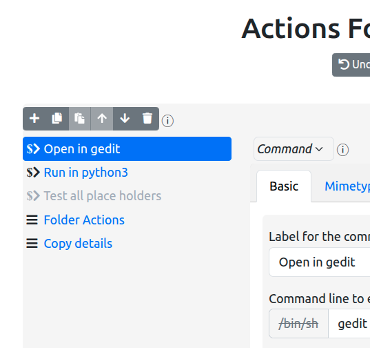
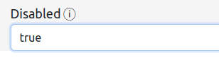
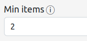
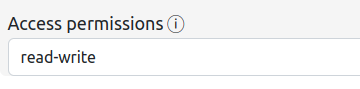
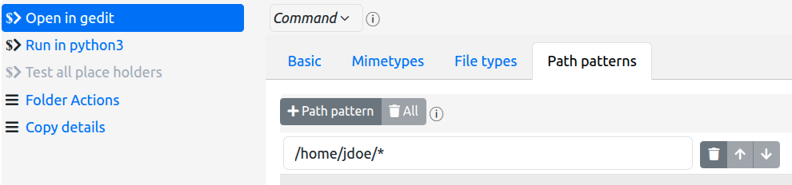
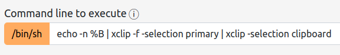
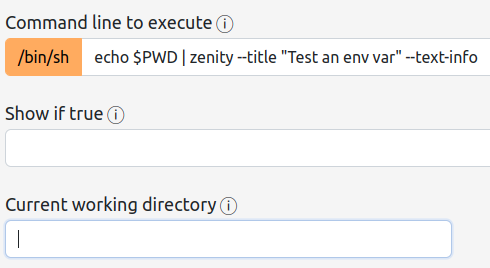
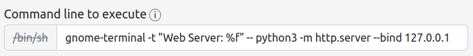

Actions For Nautilus
The Actions For Nautilus extension allows you to add items to the context menu (i.e. the right-click menu) of Gnome Files (called Nautilus from here-on, to avoid confusion) based upon the characteristics of the files and directories that you have selected in the Nautilus window (simply called files from here-on).
Within the context of the extension, these menu items are called actions.
You can add two types of actions.
- Commands - a command action allows you to execute an arbitrary command, passing the selected files to the command as arguments.
- Menus - a menu action contains other actions, allowing you to structure your configured commands into logical groups in any way you see fit.
The configuration of the extension is, effectively, the declaration of the menu and command actions that you wish to see in the Nautilus context menu for different types of files.
The details of the configuration file itself can be found in the project documentation. This help information is intended to help you use the configurator tool to create and modify the configuration.
Table of Contents
- Configurator Layout
- Actions
- Menu Actions
- Command Actions
Configurator Layout
The configurator UI is basically laid out in two columns:
-
The left-most column shows you the actions that will be added to the Nautilus context menu.

This allows you to:
- see the actions already added to the main context menu,
- easily identify any actions that have been disabled,
- add new actions to that menu
- select an existing action in order to edit its characteristics
- remove all actions from the main menu (which, at the top level, removes all actions from the entire configuration)
It also allows you to set the ordering options for the main menu actions, and to set the debug output option if you need to resolve problems with your configuration.
-
The right column shows the details and characteristics of the currently selected main menu action from the left-most column.

Here you:
- set the type of the selected action - Menu or Command
- set the label for the action
- set the submenu items for a menu action
- set the command string, current working directory, and filter rules that pertain to a command action
- reorder the action within its containing menu
- delete the action
Of special note is the Submenu Actions tab for menu actions ... this presents the identical UI elements in a nested format - i.e. the creation and manipulation of submenu actions is exactly the same as for main menu actions, performed within the UI presented by the Submenu Actions tab.
The instructions below are presented for main menu actions, but the same semantics apply to creating actions in submenus.
Undo, Redo, Save, and Help
Under the title, you will see a row of buttons, the first three of which allow you to undo changes that you have made, redo changes that you have undone, and save changes back to the configuration file:

The save button will not be enabled if there are no changes to save, nor if there are problems with the configuration. If you have made changes but the save button is disabled, you will need to revisit those changes and correct the problems that are reported in order to be able to save the configuration.
Note that when you save the configuration, it may take up to thirty seconds to see the changes in the Nautilus context menu.
Once saved, the previous configuration is backed up in the ~/.local/share/actions-for-nautilus
folder:

You can, of course, restore a previous version of the configuration by replacing the file
config.json
with the contents of a backup file.
You are responsible for deleting backups that are no longer required.
The Show Help button (which you have already discovered if you are reading this) is also present
at the end of the button row, and allows you to hide this help window once you have shown it.
And then there is the JSON button...
The JSON Source Editor
The configurator includes a syntax-checking JSON source editor which, unsurprisingly, is toggled using
the JSON button in the top button row. This tool is useful for making bulk changes to your
configuration, such as copy/pasting actions or adding examples from the project wiki into
your configuration.
When this editor is active, the configuration JSON source can be directly manipulated and the
main configurator UI is hidden. Additionally, the top row Undo, Redo, and
Save buttons are disabled (though neither your changes nor your undo/redo history are lost).
When opened, the source editor occupies the full vertical space available to it, though it can be resized vertically by dragging the bottom border.
Text manipulation within the source editor uses the same semantics, keyboard shortcuts, and context menu actions as are found in most web page text widgets.
JSON syntax errors are highlighted with a red X in the left margin of the editor, and explained
when you hover the mouse over the X.
To close the source editor without saving changes, either click its embedded Cancel button or
click the top row JSON button again.
To save changes you make in the source editor (and close the editor), click on the embedded Save
button. If there are
any JSON syntax issues, you will not be able to save the data and the source editor will remain open. The
source
editor itself should highlight the syntax issues.
Upon successful saving, the editor will close and the changes will be propagated to the main configurator UI with any format errors (as opposed to plain JSON syntax errors) notified to you in the normal way.
Note that saving within the source editor does not save the configuration file itself. Instead it simply updates the main configurator UI with the modified configuration.
If, after saving, you need to reverse the changes that you made in the source editor, simply click the
top row Undo
button
Disabling an Action
Both menu actions and command actions can be disabled by setting the Disabled property to
true
Actions
Actions are what you configure to appear in the Gnome Files context menu. They can be menus or commands. Obviouisly menus contain commands - and other menus, though it is probably inadvisable to create a menu structure that is more than a couple of levels deep.
Menus and commands have some global features in common:
- They both have a
Basictab in the righthand pane in which ... well, basic information is entered. In that tab; they share theLabelfield, whose use is pretty obvious! They can both be disabled!

When set to
true, the corresponding action will not appear in the Gnome Files context menu. This allows the action to exist in the configuration, maybe as a template or a work-in-progress, but not actually be used.Note, however, that the action configuration must still be valid in order for you to be able to save the configuration.
To help quickly identify disabled items, they appear on the left of the UI in grey rather than blue.
-
They can be added to, moved within, copied within, and deleted from their containing menus.
The
+button adds an action to the menuThe paste button pastes an action from the internal clipboard into the menu (it will not be visible if there is no action in the clipboard)
The "bin all" button deletes all actions from the menu (after asking for confirmation, of course)
At the top of the action detail pane, there is also a toolbar.

The "bin" button removes the action from the menu (after asking for confirmation, of course)
The "copy" button (normally) adds a copy of the action to the menu, just below the copied action (and with a modified label)
The arrow buttons allow you to move the action up or down within its containing menu
They can be drag/dropped to different positions within their containing menus (but not between menus).
-
Finally, they can be Copy/Pasted or Cut/Pasted between menus.
Pressing the
%3CCTRL%3Ebutton while clicking on the copy action button or the delete action button places the action into the internal clipboard.This will then cause the paste buttons in the menu toolbars to become visible. You can then paste the action into a menu (at which point the paste buttons will again be hidden)
Menu Actions
To create a menu action, do the following:
-
click on the
+button in the menu toolbar -
In the newly-created action details area (to the right), click on the type indicator box and change its value to Menu:
You will now see the tabs that are relevant to menu actions:

You will also notice that the selected action in the left column has a new icon:
 - the menu action icon - instead of
- the menu action icon - instead of  ,
the command action icon.
,
the command action icon.
To add actions to your new menu, click on the Submenu Actions tab to reveal a nested
panel that is similar to the top-level UI. Here you can, again, click on the
+ button to configure the actions that will appear
in your newly created menu.
That is all there is to menu creation.
Note, however, that your menu will not appear in the Nautilus context menu until you add command actions to it, and then only if those commands are pertinent to the files that you have selected in the Nautilus window.
Command Actions
Command actions are really what this is all about - executing a command string of your choice, passing details of the file(s) you have selected as arguments to the command.
Examples of commands taken from the delivered sample configuration:
- Start an HTTP server using a specific folder as the root folder
- Copying details of the selected files to the clipboard
- Running a script file with an appropriate interpreter
- Executing an arbitrary command in a selected folder
- ...
Using tools such as Zenity, Yad, XClip, Gnome Terminal, and others, you can construct complex scenarios and even pipelines that are then executed with a simple click on the Nautilus context menu item.
Creating a Command Action
You create a command action in the same way you create a menu action:
-
click on the
+button in the menu toolbar -
In the newly-created action details area (to the right), click on the type indicator box and change it to Command
Upon creating the action, you will see the details that can be specified for the command:

(as well as a warning that minimal required information has not yet been provided).
Firstly give your command a label, which need not be unique within the menu/submenu to which you are adding the command.
And, evidently, you must provide a command line to execute when the action is clicked on. We'll cover that below.
Firstly, however, we'll cover the rules that dictate if a command action is applicable to the current files in the Nautilus selection.
Filtering rules
Actions For Nautilus can examine the Nautilus selection to decide if a specific command action should be available to that selection.
This examination can apply six different criteria:
- The number of files in the selection
- The minimum access permissions that the user must have for the selected files
- The mimetypes of the selected files
- The basic filetypes of the selected files
- The paths of the selected files
- Arbitrary criteria based upon the result of an external command execution
Firstly note that each of these is optional - if not used, the action applies to a selection of any size, any file type, any mimetype, any path, and any permissions.
It is important to note that all files in the selection must pass the filtering rules in order for the action to be shown in the Nautilus context menu.
It is also important to note that if none of the actions in a submenu are applicable to the current selection, that submenu will also not appear in the Nautilus context menu.
Min items

This is pretty simple to explain: the minimum number of files that must be in the selection in order for the command action to be shown.
The default value of this property is 1. This is likely to be the most common setting that you will use. However for an action that, say, compares two or more files, you might want to specify a value of 2 here.
As is evident, this property value and the Max items property value are coupled. If the value of Max items is greater than its default of zero, then the value of Min items must be less than or equal to the value of Max items.
Max items

This is also pretty simple to explain: the maximum number of files that can be in the selection in order for the command action to be shown.
Normally you will be looking at values of either 0 - meaning unlimited (the default) - or 1 meaning ... well ... 1. However, other values can be used. For example, for an action that compares two files, you might want to specify a value of 2 here.
In this example usage, you might also want to set the value of Min items to 2 ensuring that the action only appears when two files have been selected.
Again, this property value and that of the Min items property are coupled. If the value of Max items is greater than its default of zero, then the value of Min items must be less than or equal to the value of Max items.
Access permissions

The optional Access permissions rule is used to ensure that you (the user) have at least the indicated access rights to the selected files.
There are eight possible values presented as a selection list:
- any: the default; permissions are not checked
- read: you must have at least read permissions for the selected files.
- read-write: you must have at least read and write permissions for the selected files.
- read-execute: you must have at least read and execute permissions for selected files, or read and navigation permissions for selected folders.
- read-write-execute: you must have full read, write and execute/navigation permissions for the selected files.
- !write: you must NOT have write permissions for the selected files.
- !execute: you must NOT have and execute permissions for selected files, or navigation permissions for selected folders.
- !write-execute: you must NOT have write and execute/navigation permissions for the selected files.
The rule is useful for avoiding actions that make no sense if you don't have the necessary permissions for the selected file(s) in order for the associated command to successfully complete.
For example, if you have an action that creates a new document in a folder, it makes no sense to present that action in the context menu if you do not have permission to actually create files in (i.e. write to) the selected folder!
Or, if your action involves executing a selected file, it would certainly be cleaner to only present that action if you actually had execution permissions for that file.
The "negative" settings are designed to allow you to present different actions depending on the permissions
for a selection. For example, presenting a Script actions submenu for non-executable scripts, but
avoiding that menu when a script is executable (and thus may appear in a different menu) - you also must always
have read access when using the negative settings.
Mimetypes
With the mimetypes list, entered in the Mimetypes tab, you can specify the IANA Media Types to which your command action applies. E.g.

In this example, the Run in python3 action only applies to files whose mimetype is text/x-python.
You can specify any number of mimetypes - the selected files must match one of these in order to pass the mimetypes filter rule.
A mimetype can be declared in one of the ways standard to IANA Media Types:
- type/subtype - a specific mimetype (e.g. text/x-python as in the above example)
- type/* - all subtypes of a specific type (e.g. audio/* for audio files of any encoding)
You can specify * or */* to accept all mimetypes - but since this is the default setting it's a bit superfluous to do so.
You can make a mimetype "negative" by preceding it with an exclamation point to declare that NONE of the selected files should be of the specified mimetype(s). E.g.

In this example, the Open in gedit action will not appear if any of the selected files is a PDF, an audio file, or an image file.
You should probably avoid mixing standard (positive) rules with negative rules since the result could be confusing, but the algorithm is fairly straightforward: All selected files must match one of the "positive" rules, if any, and none of the "negative rules".
Note that the effect of this may be somewhat counter-intuitive:
!application/*
application/jsonwill not allow application/json files through the filter, whereas
!application/json
application/*will "correctly" block application/json files while allowing all other files of (only)
application
subtypes.
This is a known current limitation of the feature that may be alleviated in a future release to allow more specific rules to take precedence over more general rules.
However, also note that the first of these two examples can be "corrected" simply by using only a positive rule:
application/jsonwhich automatically blocks anything not matching that mimetype (see what I mean by confusing!)
File types
With the file types list, entered in the File types tab, you can specify the Gnome file types to which your command applies. E.g.

In this example, the Start HTTP server here action only applies to directories.
The available filetypes are defined by Gnome itself and are, therefore, presented as a selection list:

You will notice that "negative" versions of the file types are also available - the selected files must NOT be of such file types.
The most useful filetypes are likely to be directory, file, and
symbolic link and, as such, a
"macro" filetype is available - standard - which encapsulates all three.
As with mimetypes, mixing negative and standard rules could be confusing, however there is a useful case for such a mix:

This configuration specifies all standard types EXCEPT directories - a sensible filter for
an editor command.
Path patterns
With the path patterns list, entered in the Path patterns tab, you can state that the paths of the files in the selection should match certain patterns. E.g.

In this example, the Open in gedit action only applies to files that are in user jdoe's home directory.
Patterns can be entered as "glob" patterns or regular expressions.
-
Glob Patterns allow you to specify the following placeholders in the pattern string:
- * - indicating any number of characters
- ? - indicating any single character
- [abcd] - indicating any character in the set of characters between the brackets
- [!abcd] - indicating any character not in the set of characters between the brackets
- all other characters are literal
The above example is a glob pattern.
Globs are simple but limited - on the other hand, most needs can be expressed accurately enough using them.
Note that glob patterns inherently match against the whole path name - so, for example, a path of
/etc/home/jdoe/myfilewould not match the above example. -
Regular expressions allow for far more complex patterns to be expressed. It is beyond the scope of this document to explain regular expressions, but the extension specifically supports the regular expression syntax implemented by Python. Documentation of this syntax is available here.
To use a regular expression, precede the pattern with the tag re:. E.g.

This example specifies the same rule as the glob example above but as a regular expression ...
weeelllll - not quite ...
Regular expression patterns do not inherently match against the whole path name - so, for example, a path of
/etc/home/jdoe/myfilewould match this regular expression.To make the pattern match only the whole path, you need to prefix it with a carat character and suffix it with a dollar character:

Again, you can prefix the entire pattern string with an exclamation point to specify a "negative" path pattern - no file in the selection should have a path that matches such a pattern - and again mixing standard and negative rules may be confusing, but may also be useful in breaking down complex patterns into simpler components.
Strict match
Mimetypes, File types, and Path
patterns have
an option named Strict match, whose default value is false.
Generally, when this is set to true, it causes the extension to apply "strict" matching to the
files in a
selection. So, if you select a set of files, while your action may accept multiple different criteria (say,
multiple
different file types), all the selected files must match the same criteria (e.g. must be of the
same filetype).
Technically, this has a slightly different meaning depending on which of the above the option applys to:
- In the case of file types it means that all selected files must have the same Gnome file type.
-
In the case of mimetypes, strict matching means that all selected files must have the same mimetype.
In particular it does not mean that each file must match the same mimetype rule. So for example, if you specify
image/* audio/*
as the mimetypes for an action, and then select animage/jpegfile and animage/pngfile, without strict matching these files pass. With strict matching they will not because, although they pass the same mimetype rule, they are not of the exact same mimetype. -
In the case of path patterns, strict matching means that all selected files must match the same positive path pattern rule as that which matched the first file in the selection list. Note also that it does not mean that all files must match a same rule. The first rule that is found to match the first file in the selection must match all files.
Additionally, if there are any negative path pattern rules for the action, all files must still pass all of those rules
Note that with mimetypes and filetypes, you can specify an empty rule set and still set the
strict match to true in order to effect an
"accept all files with the same type, no matter what that type is" rule (this trick has no effect on path
pattern handling)
Show if true
And, finally, the most flexible way of choosing whether a command action should be shown for a particular file or selection - call an external command to decide!
Simply put, this property allows you to specify a shell pipeline to execute to determine if the command
action is applicable to the current selection! In this example, we switch to the selected folder, search
backwards
for a file or folder named .git and, if one is found, print the line true (and
nothing else)
on stdout. I.e. we show the action if the selection is within a GIT repository!
(find-up is my own script for doing a backward find).
The command is executed by the default system shell, so all shell capabilities are available to you.
You can use the %F and %f placeholders.
If you use the %F placeholder then the paths of all selected files are passed on the command
line with each one single-quoted. If you use the %f
placeholder, then the command is invoked for each file in the selection with %f replaced by the
single-quoted full path of that file.
Upon return, if the command emits a single line true on stdout then the action is
included in the Gnome Files menu. If not
(including any error in execution of the command, or anything else on stdout) then the action
will not appear in the menu.
Firstly, obviously this is extremely powerful and can be "piggybacked" upon to produce all sorts of wonderous side effects in addition to its prime purpose. But DON'T, and if you do, I take no responsibility for unexpected bad things happening!
Secondly, this can significantly impact performance if over used! Selections where you use the
%f placeholder will result in the command being called
once for each item - so the larger the selection, the slower the rendering of the menu will be. To combat
this, all other rules are examined before an
action's Show-if-true command is executed, so use those rules to eliminate the action for other
reasons before resorting to the command execution.
For example, if you were to use the above example, and you keep all your GIT repositories in a specific directory tree, use path patterns to avoid the command being unnecessarily executed for anything not in the GIT repository tree.
Commands
And so to the most important part - the command that is executed when you click on an action in the Nautilus context menu.
In essence, the command string is very similar to commands you would enter at a shell prompt or at the Gnome ALT-F2 prompt. It is comprised of (normally) space-delimited tokens, the first of which is the name of, or the full path to, the command you wish to execute, the remainder being the positional arguments to be passed to that command.
A slightly modified example from the delivered sample configuration...

The command here is gnome-terminal - everything after that is an argument to the
gnome-terminal command ... except that this is a bit special - the -- argument
actually
tells gnome-terminal that everything after that is a command line to be executed
once the
gnome-terminal window is open.
So here, when you click on the action, the extension will execute gnome-terminal and pass
the rest of the space-delimited tokens as positional arguments.
gnome-terminal will open in a new window and itself execute
the command python3 -m http.server --bind 127.0.0.1 which starts a python HTTP server,
listening on the 127.0.0.1 (or localhost) network interface, on port 8000,
reporting all activity into the gnome-terminal window.
When you close the window the HTTP server stops.
You can start the HTTP server without gnome-terminal - just remove
gnome-terminal --
from the command string - but you will see no feedback and you will have to make other
arrangements to stop the server when you are done with it.
And that is an important point here - you get no feedback unless the command you execute inherently provides its own feedback (such as a UI or pop-up, etc).
The command string is "completed" by expanding place holders that represent different informational strings associated with the selected files. How it is completed is affected by the interpolation option that you select for the action.
Current working directory
In the HTTP server example above, you may notice that we haven't specified which directory the HTTP server should use as its document root.
For the python HTTP server, the default root directory is the "current working directory" (or CWD) when the command is executed. Reliance upon the CWD is ubiquitous behavior in Linux commands. You can specify the CWD for your commands by using the property named Current working directory:

If you don't specify the CWD, the setting is "undefined" - i.e. the extension itself makes no special arrangements to use a default.
The glaring problem with this particular CWD is that, on the face of it, the setting - %f -
is not a valid directory. However, within the extension, it is valid. That particular
value is a placeholder that tells
the extension to use the file path of the first file in the selection as the CWD ... and, because
this particular command action is configured only to be available when the selection size is 1 and the
selected file is a directory, we are guaranteed that %f will always resolve to a valid
directory from which to serve content.
Using a shell to execute the command
Writing shell scripts to be executed by this extension is a prime use case, allowing you to implement just about any scenario imaginable and having them available in the Nautilus context menu.
By default, the extension will attempt to directly execute an action's command via operating system APIs.
This works when executing a shell script too if:
- The script file is marked as executable
- The script itself informs the operating system what shell interpreter to use with a "hash
bang"
(
#!/path/to/shell) stanza - The script is in a directory that is listed in the environment's
PATHvariable, or you specify the full path to the script as the first token of your command string
However, you can ask the extension to execute the command within a shell by clicking
on the /bin/sh
In effect, this is similar to prefixing the command string with /bin/sh - but it is not
exactly the same, since the extension exploits the embedded python capability of executing commands in
a shell and that is a lot more powerful than simply using a prefix.
Why would you want to do this?
Well, firstly, if the conditions above aren't satisfied, this is the easiest way to execute a shell script.
But this option may also avoid the need for writing a script at all:

This command string runs a shell pipeline without requiring a wrapper script. It executes three commands
echo, to write the basenames of all the files in the selection tostdout(again,%Bis a file detail placeholder),xclipwith arguments that tell it to- Read
stdin(i.e. thestdoutfrom theechocommand) - Set the contents of the desktop primary clipboard to that
- re-echo
stdintostdout
- Read
xclipagain, this time with arguments that tell it to- Read
stdin(i.e. thestdoutfrom the firstxclipcommand) - Set the contents of the desktop default clipboard to that
- Read
(Read the xclip documentation for more details about the available clipboards)
After executing this action, the default and primary clipboards will contain the basenames of all the files that you selected. You can then paste them wherever you want.
Another really instructive example:

(You really do have to install Zenity!)
What does this do?
- echoes the value of the environment variable
PWD(which contains the CWD path) tostdout - "pipes" that to the
zenitycommand, telling Zenity to display a window with the contents ofstdin - and NOTE WELL : Current working directory is not set
Obviously, the primary purpose of this example is to show that shell environment variable expressions can be directly used... but it also solves the "mystery" of what the CWD of a command action is if you don't specify it - no spoilers; try it!
Most things that you can specify at a shell prompt can also be used in the Command
line
string with the /bin/sh button active. Simply experiment to find the limits!
Shells
At this time there is no way within the extension to specify the default shell to use when the
Use shell option is activated. The extension uses whatever is bound to the system
sh command.
In most Gnome environments this is usually an at least minimally BASH-compatible shell, but if
you are executing a shell script, this particular shell implementation may not be adequate for your
needs (looking at you, dash, the default system shell in Ubuntu and some derivatives).
You can overcome this either by rebinding the sh command to the shell of your choice or by
not enabling the /bin/sh button and, instead, doing the following:
-
Make the first line of your script be a "hash bang" stanza
#!/path/to/shelle.g.
#!/bin/bash -
Make your shell script executable via the Nautilus file properties dialog (or by executing the command
chmod +x /path/to/your/shell/script) - Put your shell script in a directory that is listed in your environment's PATH environment variable, or specify the full path to your script as the first token when constructing your command action Command line string.
Command line placeholders
The command line would be of limited use if it didn't have access to information about the files in the Nautilus selection. As already hinted at, though, it does!
When specifying the command line you can use a number of placeholders as arguments to your desired command, each of which will be replaced with specific details drawn from the files that are in the selection. Furthermore, the placeholders at your disposal have different "flavors" that affect how the extension executes the command that you have configured.
All the command line and cwd placeholders implemented by the original
filemanager/nautilus-actions project are implemented by this extension, with
the same semantics:
| Placeholder | Description | Repetition |
|---|---|---|
%b |
the basename of the first selected item (e.g. my-file.txt) |
SINGULAR |
%B |
a list of the %b values of all selected items |
PLURAL |
%c |
the number of items in the selection | ANY |
%d |
the full path to the directory holding the first selected item (e.g.
/home/me/my-first-dir/my-second-dir
|
SINGULAR |
%D |
a list of the %d values of all selected items |
PLURAL |
%f |
the full path of the first selected item (e.g.
/home/me/my-first-dir/my-second-dir/my-file.txt
|
SINGULAR |
%F |
a list of the %f values of all selected items |
PLURAL |
%h |
the host name from the URI of the first selected item | ANY |
%m |
the mimetype of the first selected item (e.g. text/plain) |
SINGULAR |
%M |
a list of the %m values of all selected items |
PLURAL |
%n |
the username from the URI of the first selected item | ANY |
%o |
no-op operator which forces a SINGULAR form of execution - see below for more details | SINGULAR |
%O |
no-op operator which forces a PLURAL form of execution - see below for more details | PLURAL |
%p |
the port from the URI of the first selected item | ANY |
%s |
the URI scheme from the URI of the first selected item (e.g. file) |
ANY |
%u |
the URI of the first selected item (e.g.
file:///home/me/my-first-dir/my-second-dir/my-file.txt)
|
SINGULAR |
%U |
a list of the %u values of all selected items |
PLURAL |
%w |
the basename of the first selected item without it's extension (e.g. my-file)
|
SINGULAR |
%W |
a list of the %w values of all selected items |
PLURAL |
%x |
the extension of the first selected item (e.g. txt) |
SINGULAR |
%X |
a list of the %x values of all selected items |
PLURAL |
%% |
the % character |
ANY |
%_ |
causes a token to be split into two tokens at this point - roughly speaking a token is a command argument | ANY |
Placeholder interpolation
Previous versions of Actions For Nautilus had some deficiencies when it came to interpolating the
above placeholders into command arguments, and in quoting arguments and escaping characters to
make the command execute as expected. The input command line was mostly devoid of characters with special
meaning to the extension and you could alter the space-delimited tokenization by using \
characters
to escape spaces or quotes to include spaces in tokens - and \ characters to escape quotes and
backslashes.
Here is a full example from the sample configuration, setting the terminal title to a value that includes
spaces:

This approach wasn't bad, per-sé, but it was incomplete, and lead to errors when file names contained special characters, or complex argument construction was desired (for example, appending a suffix to a file name).
Note also that such issues should only have affected commands that where executed by the shell. Those that are executed natively should not have experienced these problems, and yet, because of the way it was implemented, they also suffered.
There is now a new way to perform interpolation that should eliminate most if not all of the issues with the old way.
The problem is that this new way will undoubtedly play havoc with command lines that rely upon the old way.
So, you have the option to stick with the old way, and, indeed, this is the default for existing actions.
The new way is designed to make it more intuitive to create a command line for an action while correctly handling the escaping of special characters that may appear in file names and paths. You simply enter the command line as you would at a shell prompt treating each token as a single argument. Use placeholders at will without worrying about any internal special characters that may need treating specially. Any explicit special characters you include in your command line should be appropriately escaped if needed, however.
Previously the command line was scanned for placeholders with every PLURAL placeholder
(the ones that handle all the selections at once) expanded in place. That is no longer the case.
Instead, the command line is split into shell "tokens" similar to the Python shlex
utility before any interpolation is performed, resulting in a list of tokens that each constitute an argument to
be passed to the action's command (the first such token being the target command itself).
Subsequently every token that contains at least one PLURAL placeholder is repeated for each additional item in
the selection.
If the command is being prepared for "native" execution (without a shell) then each token is simply expanded as-is according to the place holders within it, and the token list passed directly to the system for execution.
If the command is being prepared for execution in the shell, each token is expanded as necessary according to the place holders within it, with any necessary characters in the file information approriately escaped. Finaly the tokens are assembled into a command string appropriate for passing to the system shell for execution.
Finally there is a new placeholder, %_ that splits a single token found in the command line into two
arguments for the action's command. Note that, with complex quoting in your command line, the effect of this placeholder may
be different when using a shell from when not using a shell for your action.
Confused? Well, without treading on the toes of the next section, here are some examples based on a
selection of two files named no-spaces.png and one space.txt:
| Action Command Line | Result | Explanation |
|---|---|---|
ls %B |
ls no-spaces.png one\ space.txt |
The command is passed two 'bare' arguments, with special characters in the interpolated file information properly escaped |
ls "%B" |
ls "no-spaces.png" "one space.txt" |
The command is passed two double-quoted arguments, with ', \, ", and $ characters in the interpolated file information escaped |
ls %B %M |
ls no-spaces.png one\ space.txt image/png text/plain |
The command is passed four escaped arguments: the file basenames, followed by the file mimetypes |
ls %B%_%M |
ls no-spaces.png image/png one\ space.txt text/plain |
Note the effect of %_ - the command is passed four escaped arguments: the basename of the first selection, the mimetype of the first selection, the basename of the second selection, and the mimetype of the second selection |
ls %B%_%B.backup |
ls no-spaces.png no-spaces.png.backup one\ space.txt one\ space.txt.backup |
The command is passed the basename followed by the .backup basename of each item in the selection |
ls "\"%B\""%_%M (not using shell) |
ls "\"no-spaces.png\"" image/png "\"one space.txt\"" text/plain |
Similar to the ls %B%_%M example above, except that the basenames have embedded quotes - this might be viewed as the %_ placeholder behaving as expected. |
ls "\"%B\""%_%M (using a shell) |
ls "\"no-spaces.png\"" "\"one space.txt\"" image/png text/plain |
Similar to the ls %B %M example above, except that the basenames have embedded quotes - this might be viewed as the %_ placeholder NOT behing as expected.
This is due to internal constraints when constructing a properly escaped command line for the shell. However, note that you would normally not need to resort to this kind of complex
quoting because the extension now properly handles escaping of interpolated file information correctly for the context in which the placeholders are used. |
The new method is the default for new actions:
and, of course, can be activated for existing actions once you have made the appropriate adjustments to the command line
Execution behavior
The filemanager/nautilus-actions project implemented a feature whereby a
configured command could be executed once only, regardless of the number items
in the selection, or once for each item in the selection.
This extension implements the same feature with the same semantics.
The decision as to which mode is desired is based upon the first placeholder found in the command line for the activated action:
- If the placeholder has a
Repetitionproperty ofSINGULAR, the command is executed once for each item in the selection. - If the placeholder has a
Repetitionproperty ofPLURAL, the command is executed once only. - If the placeholder has a
Repetitionproperty ofANY, then the next placeholder is examined. - If no placeholder with a
SINGULARorPLURALrepetition value is found in the command, then the command is executed only once.
Additionally, if the command is to be executed once for each item in the
selection then any placeholder with a Repetition value of SINGULAR is
resolved to the corresponding value for the selected item for which the command
is being executed.
Placeholders with Repetition values that are not SINGULAR are resolved to
their full values for each execution of the command.
An example
This example is taken directly from the filemanager/nautilus-actions project
documentation:
Say the current folder is
/data, and the current selection contains the three filespierre,paulandjacques.If we have requested
echo %b, then the following commands will be successively run:echo pierre echo paul echo jacquesThis is because
%bmarks a SINGULAR parameter. The command is then run once for each of the selected items.Contrarily, if we have requested
echo %B, then the following command will be run:echo pierre paul jacquesThis is because
%Bmarks a PLURAL parameter. The command is then run only once, with the list of selected items as arguments.If we have requested
echo %b %B, then the following commands will be successively run:echo pierre pierre paul jacques echo paul pierre paul jacques echo jacques pierre paul jacquesThis is because the first relevant parameter is
%b, and so the command is run once for each selected item, replacing at each occurrence the%bparameter with the corresponding item. The second parameter is computed and added as arguments to the executed command.And if we have requested
echo %B %b, then the following command will be run:echo pierre paul jacques pierreThis is because the first relevant parameter here is
%B. The command is then run only once, replacing%Bwith the space-separated list of basenames. As the command is only run once, the%bis substituted only once with the (first) basename.